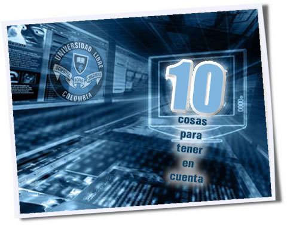

Concepto Básico De Seguridad Informática
El decálogo de la seguridad informática
La Dirección de Sistema de la Universidad Libre, seccional Bogotá, sigue trabajando duro en todo lo relacionado con seguridad informática. Por ello, hemos analizado cuáles son los errores más comunes que tenemos y que ocasionan males que van desde la perdida de archivos hasta la suplantación y transferencias bancarias ilícitas.
Confiamos en que la puesta en marcha de estas rutinas de seguridad harán que nuestra información esté a salvo, y aunque no podemos estar 100% seguros de la infalibilidad de cualquier método, hemos escrito 10 consideraciones que hay que tener en cuenta para evitar dolores de cabeza.
EL DECÁLOGO
1. Mantendrás seguras tus contraseñas sobre todas las cosas
Tanto en el computador del trabajo, como en el propio del hogar existe información y se realizan operaciones cuya repercusión económica y personal es muy importante. Esto afecta a los sistemas de las empresas y equipos informáticos, así como a la privacidad del usuario. A ninguno se nos ocurriría dejarle la llave de nuestro hogar a cualquier desconocido que nos la pidiera, incluso al perderla se procede a cambiarla inmediatamente. Algo parecido sucede con nuestras contraseñas.
A nadie se le ocurriría dejarle el nombre de usuario y contraseña de acceso a nuestros servicios bancarios por la Red a un desconocido, o siquiera, a un conocido. La repercusión de este hecho puede suponer desde que nos vacíen la cuenta suplantando nuestra persona, o en el caso de nuestro trabajo, que se apoderen de todos los datos en nuestro equipo contenidos o, incluso, puedan eliminarlos, perdiendo hasta años de trabajo por una descuidada gestión de nuestras contraseñas.
2. No dejarás pasar las actualizaciones ni parches en vano
El mantenimiento del software, es un proceso de mejora y optimización que aumenta el rendimiento del Terminal y de sus funcionalidades, por lo que, siempre es recomendable actualizar el software, incluso cuando no existe avería manifiesta, o la versión de software a actualizar es la misma que la ya instalada en el terminal.
Las actualizaciones dan cuenta de pequeños fallos o incluso “ventanas” para que terceros puedan ingresar a tu pc. Por eso, siempre que haya una actualización estable de algún software hay que realizarla. De la misma forma, los parches de seguridad son indispensables, son el cerrojo para que tu computador siga siendo tuyo y no actúe como “zombi” de un tercero que solo busca nuestra información.
No actualizar regularmente el software (o usar software versiones piratas que no se pueden actualizar) es una invitación para los cibercriminales.
3. Realizarás siempre copias de seguridad
Para la mayoría de las empresas su activo más importante es la información. Hoy en día todo depende de la información guardada en los ordenadores. Una vez pérdida ésta información es casi imposible volver a recuperarlo todo. Desastres naturales, robos, incendios, inundaciones, fallos informáticos pueden ser algunas de las causas. Por eso es tan importante hacer copias de seguridad.
Una simple copia manual requiere mover información a un CD, DVD o pen drive. Esta es una opción aceptable para alguien que tiene un portátil fuera de la oficina continuamente. Hacer copias de seguridad a un segundo disco duro es otra solución muy recomendable, rápida y de alta capacidad. Una tercera opción es hacer copias de seguridad remotas o backup online. Este método cada vez tiene más seguidores porque es la manera más segura de mantener toda nuestra información a salvo.
4. Honrarás la navegación segura
Internet es un lugar peligroso, con una amplia gama de amenazas. Para poder navegar con tranquilidad, es necesario contar con herramientas y conocimientos básicos.
Según Bruno Rossini, de Symantec, una gran parte de los usuarios de Internet, “al comprar un computador, lo primero que hacen es entrar a un buscador, después abren una cuenta de correo electrónico, después se registran en una red social y después compran algo. Todo esto sin seguridad en su computador”.
Aunque los mejores productos de seguridad sí tienen un costo, es posible conseguir herramientas de protección gratuitas, como un antivirus. También hay herramientas dentro de los sistemas operativos que protegen la información, como el firewall de Windows.
5. No piratearás
¿Quieres tener la última canción de moda, o ver la última película gratis? Mejor abstente si es que quieres tener tu equipo sin virus. Son muchos los estudios que demuestran que los programas para descargar películas o música son los que más contenido de virus tienen.
De hecho no existe una página que sea medianamente recomendable. Ya el hecho de tener productos ilegales colgados te puede dar una idea de lo que representan; no es entretenimiento gratis, y el precio lo puedo pagar tu computador.
6. Esconderás y escudarás tus redes y dispositivos
Muchos de los aparatos de hoy tienen una gran variedad de conexiones. Entre las tecnologías inalámbricas más comunes se encuentran Wi-Fi y Bluetooth, que al estar disponibles en muchos dispositivos y transmitir las señales ‘en el aire’, exigen no cometer el error de bajar la guardia ante los riesgos de seguridad.
Una red Wi-Fi personal siempre debe estar protegida con una contraseña. De lo contrario, es excesivamente fácil para personas deshonestas tener acceso a información que haya en los computadores conectados a esa red. “Es como ponerle llave a la puerta de la casa”, dice Eric Johnson (inglés), un experto de seguridad de la Universidad Internacional de Florida.
7. No creerás todo lo que ves en Internet
Los ciberdelincuentes frecuentemente engañan a sus víctimas para lograr sus objetivos, pero lo hacen con la colaboración involuntaria de ellas, en lo que se conoce como ingeniería social. Millones de personas alrededor del mundo han caído en estafas que prometen productos gratuitos y fortunas de príncipes nigerianos (inglés) entre otras cosas.
También ocurre que las personas siguen enlaces que sus propios amigos les han enviado, pero no verifican qué es lo que el enlace debe mostrar. Muchas amenazas usan las listas de contactos de cuentas de correo, redes sociales y directorios corporativos para esparcirse.
Por eso, es fundamental siempre leer y pensar antes de abrir cualquier correo, enlace o archivo de cualquier tipo, sin importar de dónde o de quién provenga.
8. Protegerás tu información en redes sociales.
Publicar la vida social en Internet tiene sus consecuencias, por lo cual es importante saber cómo protegerse en las redes sociales de personas que pudieran usar esta información para mal.
Computerworld.com ofrece 5 consejos para mantenerse seguro en Facebook (inglés), la red social más popular de Colombia y el mundo. Entre sus consejos, cabe resaltar que es necesario comprender y usar las opciones de seguridad de Facebook, saber quién es cada persona que se acepta como ‘amigo’, estar atento a posibles aplicaciones maliciosas y pensar como un cibercriminal antes de subir la información.
9. Vigilarás y guiarás a tu familia cuando sea necesario.
Independientemente de si hay uno o varios computadores en la casa, los riesgos de seguridad son los mismos para todos. Es importante que quienes sepan de seguridad informática, así conozcan poco del tema, compartan con sus familiares esos conocimientos. Una falla en seguridad pone en peligro a todas las personas que comparten el aparato o la red vulnerados.
Otra responsabilidad imprescindible para quienes son padres es vigilar lo que hacen sus hijos en la Red. Según el Centro de Investigación Médica de Estados Unidos (inglés), 41% de los adolecentes del país dicen que sus padres no tienen ni idea de lo que ellos ven en Internet.
10. Denunciarás a las autoridades si eres víctima del cibercrimen, y aprenderás de tus errores
Una de las grandes ayudas que la gente le da a los cibercriminales es que no los denuncia. Según el más reciente informe de cibercrimen de Symantec (inglés), 44% de las víctimas del cibercrimen jamás denuncia ante la policía el hecho, y 80% no cree que los cibercriminales vayan a ser capturados.
Si las personas no alertan a las autoridades, están garantizando que los criminales jamás serán atrapados, y la inseguridad solo crecerá.
Otra estadística del informe que revela una realidad desafortunada es que más de la mitad de las personas (51%) no cambiaría sus hábitos en la Red después de sufrir las consecuencias de un cibercrimen. Aprender de los errores es un mandamiento para la vida en general que también aplica para la seguridad informática.
Contactenos
Cualquier Informacion de Diseño y creacion de paginas web, encontraras mas informacion dando clik en el enlace que se encuentra en la parte inferior. con mucho gusto te atenderemos y orientamos en el proceso.
Mas Informacion